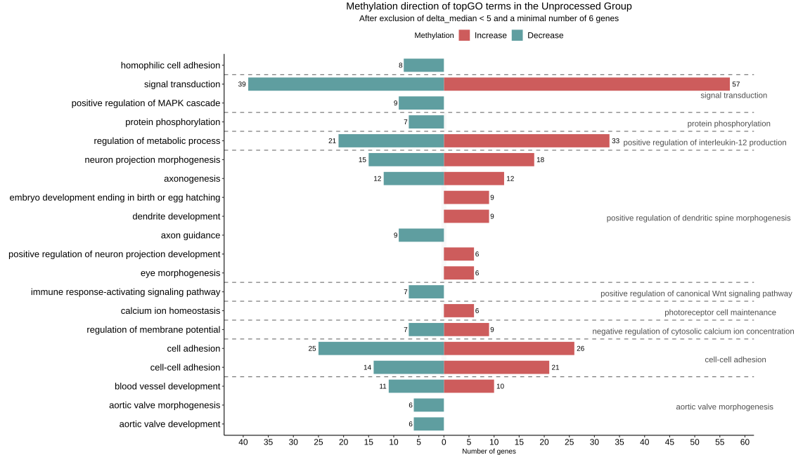

Elza Bersanoukaeva, M1 Bioinformatics and Computational Biology, Student at UCA in Nice, France.
Team Metabolism and Epigenetics, led by Romain Barres at the IPMC, Valbonne, France.
Supervised by Marie-Charlotte Dumargne, PhD.
Methylation Data Analysis Results
TopGO annotation of the unprocessed group

Functional annotation of DMR associated genes in the unprocessed group.
TopGO enriched terms are grouped depending on their parent term after redundancy reduction.
The color indicates methylation profile of associated genes and numbers represent the count of genes per category.
Here, only the most representative terms are displayed.
TopGO annotation of the ultra-processed group
Functional annotation of DMR associated genes in the ultra-processed group.
TopGO enriched terms are grouped depending on their parent term after redundancy reduction.
The color indicates methylation profile of associated genes and numbers represent the count of genes per category.